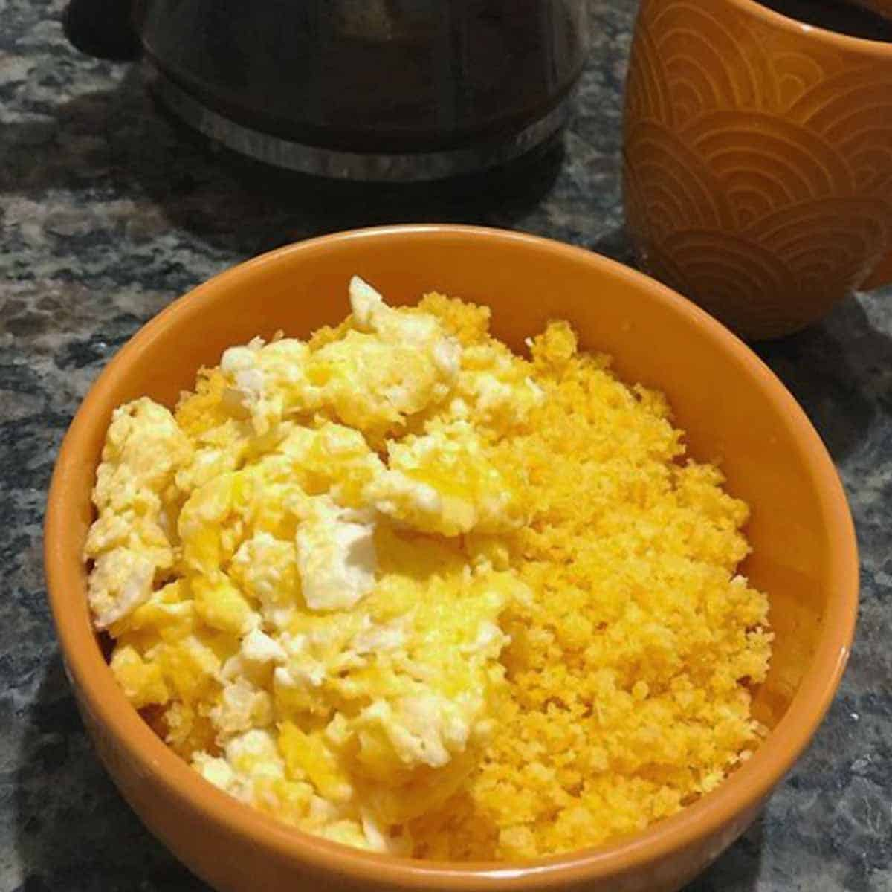

Home
Cuscuz with eggs

Description
Learn how to make cuscuz with eggs in a frying pan in an easy, delicious, healthy and practical way. A gluten-free and crunchy meal
Ingredients
- 2 Eggs
- 3/4 tea cups of corn flakes
- Water
- Salt to your preference
- Butter or olive oil
Steps
- Place the corn flakes in a container, cover with water, add salt and mix well.
- Leave to soak for 10 minutes. Then transfer to a cuscuz maker, or to a microwave-safe container.
- If you use the microwave, cover the container with a small plate and leave for just 1 minute.
- In a frying pan, greased with butter or olive oil, add the eggs and salt.
- Stir over low heat until slightly set. Or fry the eggs as you prefer.
- The cuscuz with eggs is done!